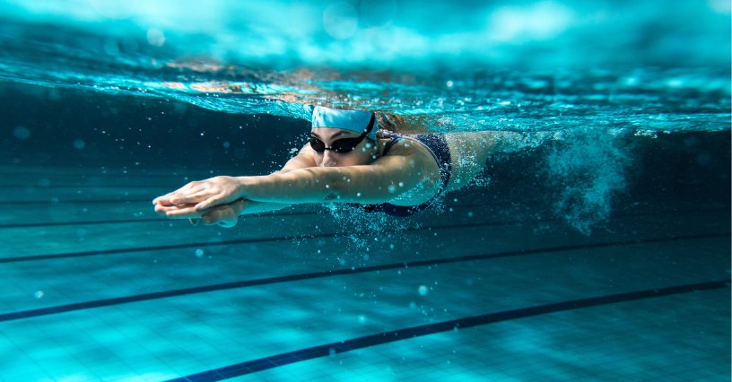

Despre Înot
Înotul este un sport practicat în apă, care include mai multe stiluri, cum ar fi liber, spate, bras și fluture.
Reguli de bază
- Înotătorii trebuie să parcurgă distanța aleasă cât mai rapid.
- Competițiile pot fi pe distanțe de 50m, 100m, 200m etc.
- Fiecare stil are reguli specifice de execuție.
Competiții importante
Jocurile Olimpice, Campionatul Mondial de Natație, Cupa Mondială FINA.
Înapoi la pagina principală